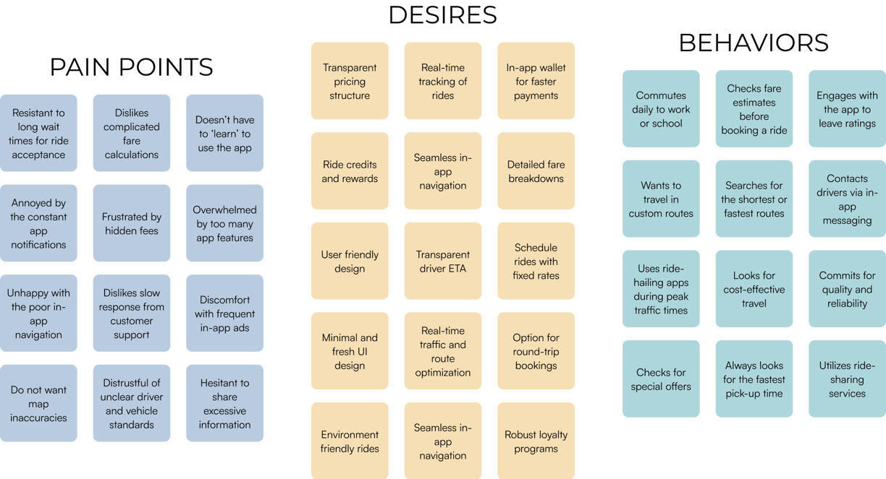

February 2022
Flit Taxi
UI/UX Design
People seeking efficient and affordable urban transportation require a versatile platform that integrates personal travel with delivery services, enabling them to navigate the city with ease and convenience.
"How might we create an all-in-one taxi & delivery app that offers a commission-free model for drivers, optimizing urban transport efficiency?"
Project Background and Personal Journey
As an entrepreneur with a keen interest in urban mobility, my journey with Flit Taxi began with a question: How can we better connect our cities and their people?? Of course.. Economically. This venture grew from the collective insights of a community passionate about redefining transportation. Their needs and feedback shaped the vision of a dual-service app that simplifies urban travel and delivery - Flit Taxi.
The shi rom concept to execution was catalyzed by the desire to not only bridge gaps in the market but also to support the drivers who are the backbone of urban mobility. In recognizing their struggles with commission-based models, we saw an opportunity to innovate. Flit Taxi was designed as a commission-free platform, placing the well-being of drivers at its core, which in turn offers better services to users.
This project is a reflection of my commitment to social and economic sustainability in urban transport. With each feature, Flit Taxi encapsulates my vision of fostering a more connected and equitable city life. It is a testament to the power of community-driven innovation, aiming to transform the urban commute into a more enjoyable and fair experience for all.
Book your rides with the cheapest fares. Yep, We charge no commission.
Problem
There's a distinct need for an all-encompassing transportation app that not only simplifies commutes and deliveries but also empowers drivers with a zero-commission model, enhancing their earnings and commitment to providing superior service.
Urban residents and small businesses struggle to find a singular, efficient platform for their varied transportation needs. The current market's separation of ride-hailing and delivery services leads to a disjointed and often frustrating user experience.
Drivers, the linchpins of the ride-hailing and delivery ecosystem, contend with platforms that diminish their earnings through substantial commissions. This outdated model contributes to driver dissatisfaction and instability within the urban transport sector.
The existing applications lack a driver-centric approach, failing to provide a sustainable and equitable working model. This oversight results in a disconnect between driver welfare and service quality offered to users.
A unified app that offers a commission-free model for drivers and combines user-friendly ride-hailing and delivery services is conspicuously absent, highlighting a need for innovation in the urban mobility space.
This proposed problem statement for Flit Taxi underscores the necessity for an integrated transportation solution and emphasizes the importance of a commission-free model for drivers, aligning with the broader mission of improving urban transportation for all stakeholders involved.
Research: Competitive & SWOT Analyses
Uber
Uber revolutionized ride-hailing with its vast network and smart algorithms, offering fast services and dynamic pricing. While its app design prioritizes user experience with real-time tracking and easy payments, it has been critiqued for surge pricing and driver relations. The platform's design is highly intuitive, offering real-time tracking and seamless payment options, which set a high standard for competitors in the market.
Ola
Ola has tailored ride-hailing to suit local needs in India, adding auto- rickshaws and bike-taxis to its service roster. Its interface is accessible, though service consistency and driver support are areas for improvement. Ola continues to evolve amidst the dynamic regulatory landscape of transport apps. Yet, Ola's competitive edge is occasionally overshadowed by challenges in consistency of service quality and driver welfare concerns.
User Surveys & Interviews
Venturing out to local auto rickshaw stands, I sought first-hand insights from the drivers themselves. Engaging in face-to-face conversations allowed me to validate our hypotheses with direct, qualitative feedback.
Utilizing a hands-on approach, I collected critical insights, leveraging these discussions to fine-tune Flit Taxi's design and functionality. These personal interactions provided nuanced feedback, integral to crafting a user-centric design that addressed the actual needs of drivers and passengers alike.
User Survey Takeaways
Prior to conducting our survey, I carefully formulated questions to delve into the nuances of user and driver experiences with transportation apps. The survey, reaching out to a diverse group of users and drivers, was meticulously designed to gauge the relevance and applicability of our services. From the user perspective, there was a pronounced call for more affordable fares, while drivers expressed a strong preference for a no-commission model that would enhance their earnings without corporate deductions.
The feedback illuminated a keen awareness among users about the financial strain of travel costs and a unanimous appeal from drivers for a fairer economic model. Despite the robust interaction within our digital forums, the need for an integrated mobile application was evident, signaling a significant market gap Flit Taxi could fill. This dual-sided insight served as a compelling indicator of the potential for Flit Taxi to achieve high user adoption, driven by the community's desire for affordability and driver profitability.
Card Sorts & Affinity Mapping
Following the survey's findings, I dove into the dynamic exercises of card sorting and affinity mapping. These interactive sessions were revelatory, drawing me closer to the daily realities of both drivers and passengers. The rich stories from these sessions were instrumental in shaping a design that resonates on a practical and emotional level.
The exercise enabled a deep organization of essential app features and offerings, while also charting out the real-world routes and experiences our users encounter in their urban travels with Flit Taxi.
Meet the Users: Personas, Task Flows, Journeys
In laying the groundwork for wireframing, I immersed myself in the environment of our users — frequenting bustling city centers, popular ride-sharing spots, and online driver forums.
Interacting with drivers and passengers alike, I cultivated a meaningful dialogue that unveiled their daily routines, pain points, and what they valued most in their transit experiences. This sincere engagement granted me a vivid understanding of their world, which I translated into authentic user personas for Flit Taxi. These personas guided the formation of task flows and user journeys that resonated with real-life scenarios, providing a strong, user-informed basis for the app's design.
Through this process, I uncovered the underlying patterns and expectations that shaped the essence of the Flit Taxi experience.
The insights I gathered during mu research helped me develop 3 personas:
Vikram - The Daily Commute
Ayesha - The Small Business Owner
Raj - The Part Time Driver
Exploration, Ideation:
1A & Wireframes
In the exploration and ideation phase for Flit Taxi, my focus was on the essential functions that would meet our user personas' needs — effortless ride booking, transparent fare estimation, and driver-rider communication.
Acknowledging the necessity for a frictionless user experience, I charted the journey of Vikram booking his daily commute, Ayesha managing her driving schedule, and Raj coordinating his business deliveries. Vital features envisioned included a real-time ride tracker, an earnings dashboard for drivers, and an in-app chat for immediate support.
Guided by these requirements, preliminary sketches were crafted, which evolved into the initial wireframes for Flit Taxi.
In the ideation phase for Flit Taxi, I homed in on pivotal features that our personas indicated were essential—effortless ride-booking, transparent fare structures, and a robust driver-partner interface.
I laid out the user journey for both riders booking their trips and drivers managing their rides. Central to the app's design was a dashboard that provided real-time earnings for drivers and ride status updates for riders. A comprehensive fare calculator and a communication hub for driver-rider interactions were also sketched out.
From there, I progressed to wireframing, taking special care to streamline the navigation and ride management process. Our wireframes evolved into mid- fidelity prototypes, integrating user feedback to refine a system that felt personalized and straightforward, facilitating a stress-free commute and delivery experience. These prototypes served as a blueprint, illustrating the app's workflow with clear interaction points.
Usability Testing
I created an interactive prototype and conducted an initial test with a small group of potential users. The test was structured to provide insights into the user experience and the app's intuitiveness.
Scenario: A user wants to book a ride for an emergency and contact the driver for immediate pickup.
Task 1 : Navigate through the app to book a ride and assess the clarity of the booking process.
Task 2 : Once a ride is booked, directly contact the driver to communicate the urgency of the situation.
Task 3: Leave feedback once the ride is completed.
Engaging users in these practical tasks provided firsthand feedback on the app's usability, guiding further refinements to ensure Flit Taxi offers a seamless and user-friendly experience for both riders and drivers.
Usability Testing Results & Affinity Mapping
Flit Taxi's Design Refinement: Streamlining for Efficiency and Engagement
Transitioning our app from functional to user-centric, we refined Flit Taxi's interface to enhance clarity and simplify the booking and delivery process, making urban mobility effortless and more connected...
User Interface Design
Flit Taxi's app name emerged from a community-focused research initiative, encapsulating the essence of swift and reliable service.
In the early IJI design phase, the aim was to mirror Flit Taxi's commitment to straightforward and efficient travel. Yet, insights from user feedback prompted a shift towards a more inclusive design, ensuring ease of use for a diverse user base.
The interface was honed to be not just practical, but visually appealing to our orldwide customers, aligning functionality with a global aesthetic appeal.T
Flit Taxi's pivotal design transformation emerged through a mix of deliberate planning and responsive adaptation. One core mission stood out in this evolution:
Flit Taxi had to achieve unparalleled ease of access, seamlessly serving a diverse global user base with varying transportation needs.
In its final incarnation, the app's design transcended the basic functionality of travel and logistics. It evolved into a dynamic network space, a nexus for commuters and drivers alike to engage, exchange experiences, and thrive in their daily urban travels.
Flit Taxi taught me
Flit Taxi has been a voyage of innovation and growth expanding from merely facilitating transportation to enhancing every aspect of urban mobility. The app's development has been deeply rooted in understanding our users— drivers seeking fair earnings and commuters demanding reliable service. Their insights have been the compass guiding our design, making Flit Taxi a leader in connecting people with places.
Our design philosophy has always been user-first. We've devoted ourselves to comprehending the daily rhythms and needs of our audience. This commitment has not only refined our design approach but also made the process profoundly satisfying. The fulfillment derived from developing a service that aligns with the real needs of commuters and drivers reaffirms the impact of a user-centered design ethos.